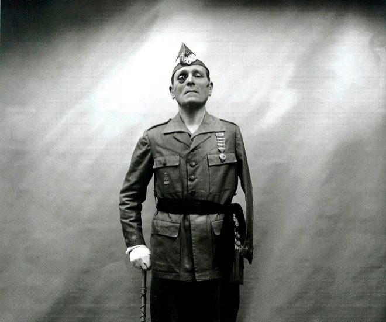

Fundacion de la Legión
Tercio de Extranjeros - nombre original de La Legión - nació como fuerza de choque para la dura guerra de Marruecos. Esta nueva fuerza tenía como objetivo sustituir a las Unidades de recluta forzosa cuya pobre preparación y frágil moral era motivo de gran número de bajas y dificultades en el desarrollo de las operaciones terrestres.
Real Decreto de 28 de enero de 1920, siendo a la sazón Ministro de Guerra don José Villalba, Su Majestad el Rey don Alfonso XIII tuvo a bien disponer lo siguiente:
<< Con la denominación de Tercio de Extranjeros se creará una Unidad militar armada, cuyos efectivos, haberes y reglamento por que ha de regirse serán fijados por el Ministro de Guerra. >>
El alistamiento quedó abierto a españoles y extranjeros sin mayores exigencias que ser sanos, fuertes y aptos para empuñar las armas, ofreciendo, a cambio, la posibilidad de hacer carrera militar en el seno de La Legión.
De esta forma, se veía convertido en realidad lo que comenzó siendo un proyecto del Teniente Coronel de Infantería José Millán Astray, militar de prestigio que unía a una elevada formación militar un demostrado heroísmo forjado en Filipinas y posteriormente en África, donde mandó Fuerzas Regulares. Incluimos a continuación el relato que el propio Teniente Coronel Millán Astray hizo sobre el origen de esta Unidad en su libro “La Legión” escrito en marzo de 1923.
La Campaña Africana
Según se producen las incorporaciones de voluntarios, se van formando las primeras Banderas1 y se inicia la instrucción en la llamada posición A2, verdadera cuna de La Legión, situada en las proximidades de la ciudad de Ceuta. Posteriormente se ocupó el acuartelamiento de Dar Riffien, que disponía de mayor capacidad y mejores instalaciones. Volvemos a transcribir algunos pasajes de “La Legión” por venir muy a propósito:

<< Los primeros Legionarios.- Habíamos sufrido un error de calculo al pensar en los hombres que se habían de presentar. Creíamos que vendrían poco a poco, por grupos de ocho o diez al día, y que luego, con el conocimiento por la propaganda, vendrían más; pero no pensamos en la explosión, y fue que en tres días se habían reunido cuatrocientos. No había que dudar, y se dijo “Que vengan”
[...] Los primeros pasos.- En la posición A, cuartel fortificado al noroeste de Ceuta, en lo alto de un picacho, batido a los vientos, que la convierten en sanatorio, frecuentemente envuelto en nubes, se albergaron los primeros Legionarios y dio comienzo La Legión.>>
Galeria